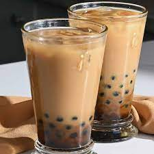

Boba Milk Tea Recipe
We will learn how to make boba milk tea!
This is a classic drink originating from Taiwan. It uses a combination of milk and tea

Required Ingredients
- Milk (Or Any Alternatives)
- Black Tea
- Tapioca
- sugar (If wanted)
Steps to Make the drink!
- Brew the Tea with hot water
- Boil the tapiocsa balls and mix into a bronw sugar mixture
- Pour ice into a glass
- Add milk halfway to the glass
- Add tapioca Pearls
- Add brewed tea
- Stir anf enjoy!